Чтобы задать логику работы приложения, его можно связать с бизнес-процессом. Например, с приложением Договоры можно связать бизнес-процесс Согласование. Он будет включать в себя все этапы рассмотрения документа внутри компании, зафиксирует, кто именно согласует договор и в какие сроки, определит, какими должны быть действия сотрудников, если договор не согласован.
Бизнес-процессы настраиваются в дизайнере бизнес-процессов ELMA365. Он выглядит следующим образом:
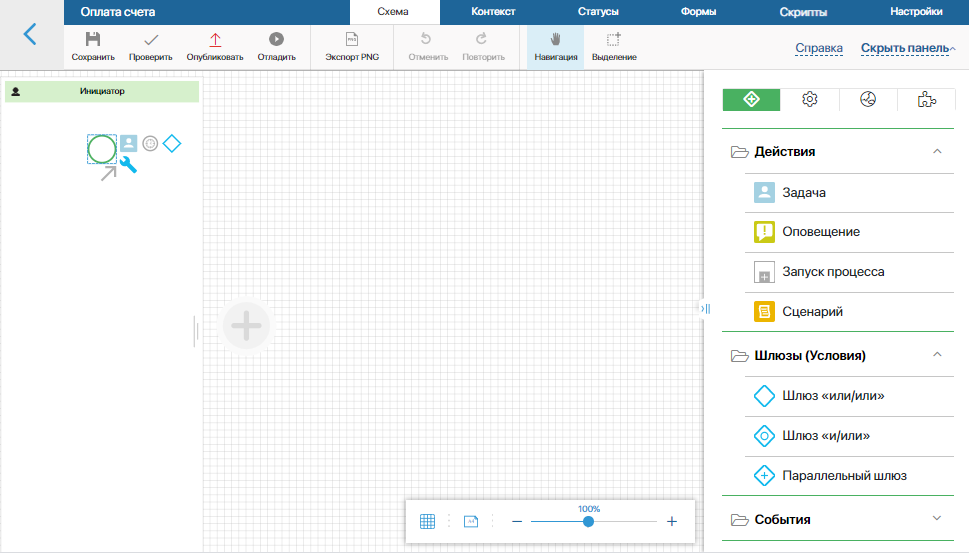
По центру расположено поле для моделирования, а справа — панель с элементами, необходимыми для построения процесса.
Создать новый бизнес-процесс для приложения
Построим бизнес-процесс для приложения Договоры. Описание создания данного приложения вы можете посмотреть в статье «Создать приложение».
Нажмите на значок шестерёнки рядом с названием приложения и выберите в меню пункт Бизнес-процесс. Отобразится страница, которая содержит список бизнес-процессов приложения.
Для создания нового бизнес-процесса нажмите на кнопку + Процесс.
В появившемся окне заполните поля:
- Название* — укажите наименование, которое будет отображаться в списке бизнес-процессов приложения;
- Код* — используется для работы с API. Поле заполняется автоматически, но при необходимости его значение можно изменить;
- Родительская категория — укажите папку, в которой будет располагаться бизнес-процесс. Чтобы создать новую папку, перейдите на страницу со списком бизнес-процессов и нажмите на кнопку + Папка.
После того как поля будут заполнены, нажмите на кнопку Создать. Откроется дизайнер, где вы сможете построить бизнес-процесс — маршрут согласования договора.
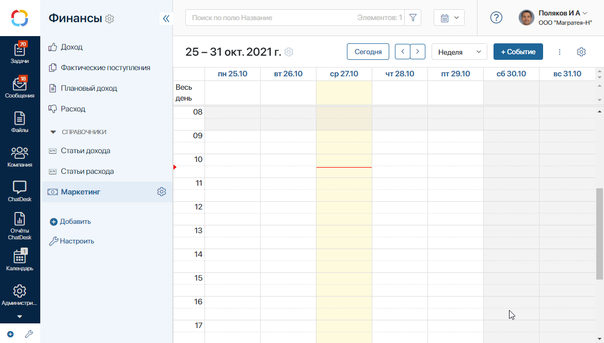
Настроить схему
Для примера создадим следующий процесс: инициатор отправляет договор на согласование, его рассматривают начальник отдела продаж и юрист. При необходимости договор отправляется на доработку. После того, как документ будет согласован обоими участниками, он регистрируется секретарем. После этого процесс завершается.
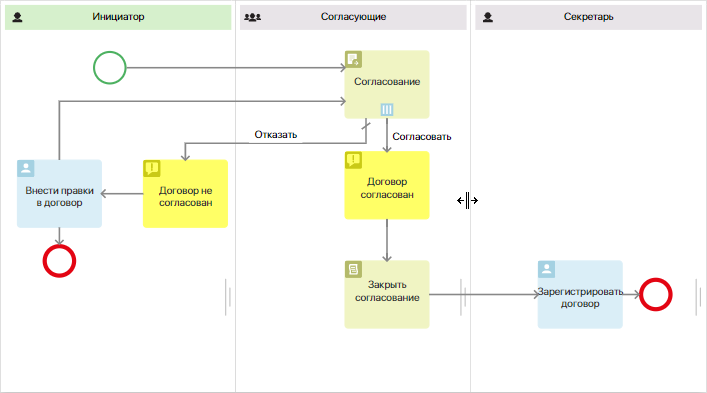
Добавить участников
Каждый сотрудник, выполняющий какую-либо роль в процессе, обозначается на схеме при помощи зоны ответственности. В процессе согласования их будет три: Инициатор, Согласующие и Секретарь. Так как согласующих несколько — начальник отдела продаж и юрист — для удобства объедините их в одну пользовательскую группу. Для этого перейдите в Администрирование > Группы и нажмите кнопку Добавить.
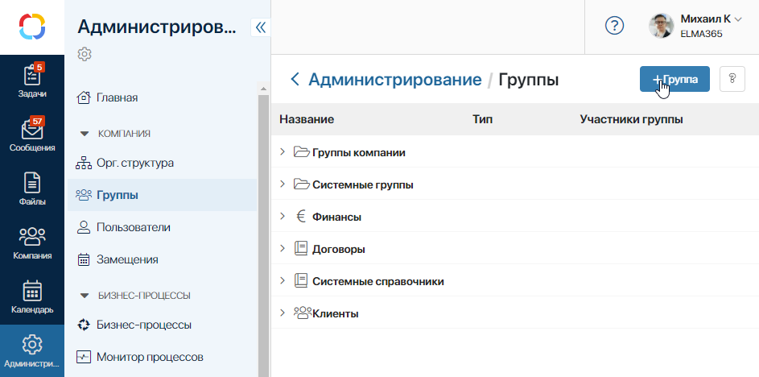
Задайте название Договоры. Согласующие и сохраните настройки. В дальнейшем эта группа потребуется для настройки зон ответственности.
Зона ответственности инициатора уже добавлена на схему по умолчанию. Так как инициировать процесс может любой сотрудник, в этой зоне ответственности не указывается конкретный исполнитель. Такие зоны ответственности называются динамическими.
Добавьте зоны ответственности согласующих. Здесь следует использовать статическую зону ответственности, так как исполнители известны заранее. В поле Группа пользователей укажите ранее созданную группу согласующих.
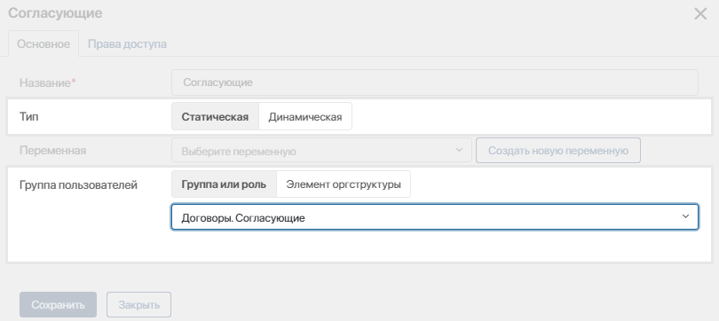
Добавьте третью зону ответственности — статическую, для секретаря, который будет регистрировать согласованный договор.
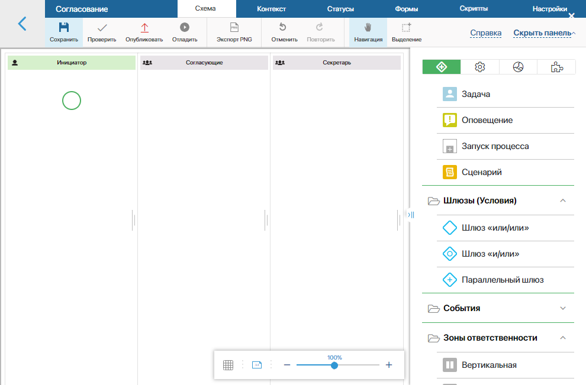
Добавить операции
Теперь в зоны ответственности необходимо добавить операции и связать их между собой переходами. Поместить элемент на схему легко — просто перетащите его с правой панели и разместите в нужной зоне ответственности. Затем соедините элементы переходами, чтобы задать направление процесса.
При необходимости вы можете копировать элементы на схеме в рамках одного процесса. Для этого зажмите кнопку Shift на клавиатуре и перетащите элемент в другое место схемы.
Нам потребуются следующие элементы: Задача, Оповещение, Согласование и Закрыть согласование. Также в процессе обязательно используется стартовое событие и конечное событие.
Стартовое событие
Схема любого процесса начинается со стартового события. Когда сотрудник добавляет новый договор в систему и нажимает на его карточке кнопку Согласовать, появляется форма запуска. На ней можно ввести комментарий, указать сроки согласования и так далее.
Чтобы настроить форму, дважды нажмите на стартовое событие на схеме. В окне настроек откройте вкладку Форма. Слева в колонке Контекст перечислены переменные процесса, включая поле Договор, в котором хранится сам документ. Перенесите на форму те поля, которые пользователи должны заполнить, отправляя договор на согласование.
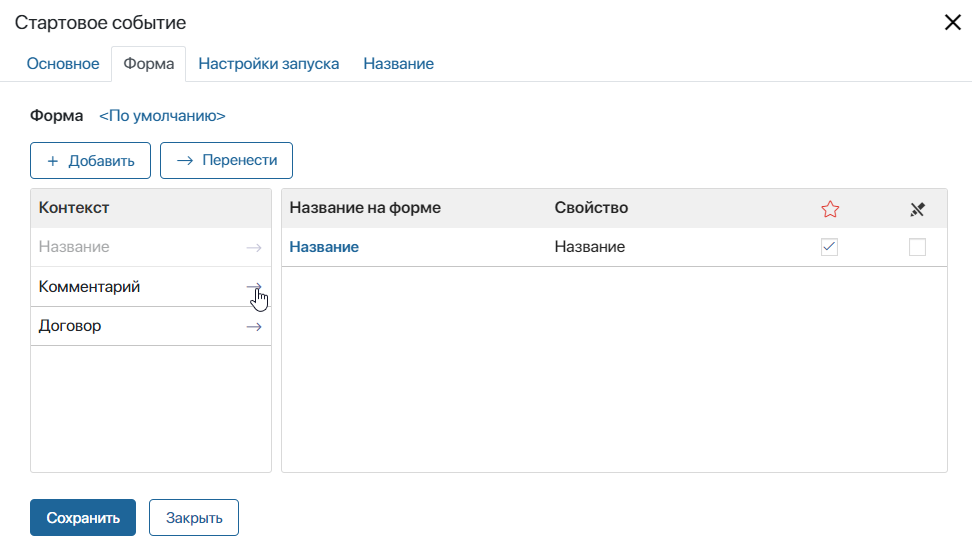
Если в контексте недостаточно переменных, создайте их. Нажмите на кнопку + Добавить, укажите название и тип данных новой переменной. Например, для поля Согласовать до выберите тип данных Дата/время.
Подробнее о настройке формы стартового события читайте в статье «События».
Элемент «Согласование»
Разместите элемент Согласование в зоне ответственности согласующих. Дважды нажмите на него и настройте:
На вкладке Основное выберите в выпадающем списке документ, который вы отправляете на согласование. В нашем примере это Договор.
Выберите тип согласования. Допустим, мы хотим, чтобы все согласующие рассматривали договор одновременно. После того, как каждый из них примет решение, договор отправится дальше по маршруту. Для этого выберите Параллельное согласование.
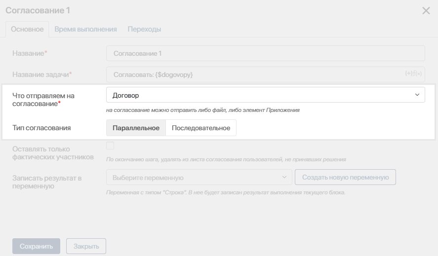
На вкладке Время выполнения задайте срок, отведенный на выполнение этой задачи, если хотите ограничить согласование по времени.
Откройте вкладку Переходы и отметьте переход Отказать как переход по умолчанию. Процесс пойдет по нему, если не будут выполнены условия перехода Согласовать, например, если один из согласующих вынесет отрицательное решение. Обратите внимание, по умолчанию в качестве названия перехода используется название элемента, к которому он ведет. На вкладке Переходы вы можете эти названия изменить.
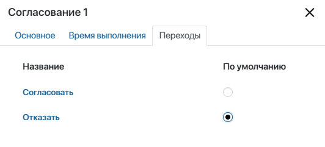
Переход «Согласовать»
Теперь настройте сам переход Согласовать. Здесь необходимо определить условия, при которых договор будет считаться согласованным, ведь в процессе участвует несколько согласующих и кто-то может согласовать договор, а кто-то отклонить. Дважды нажмите на переход на карте процесса, перейдите на вкладку Условия перехода и задайте процент согласования равный 100. Это значит, что договор будет согласован только в том случае, если все согласующие примут положительное решение, после чего процесс двинется дальше.
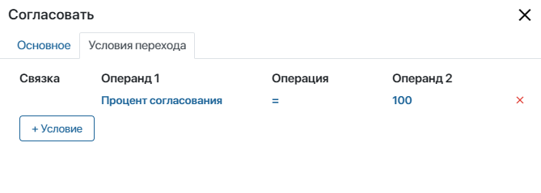
Оповещения
После того, как согласующие приняли решение, нужно сообщить инициатору, был ли договор согласован или отклонен. Для этого добавьте на схему два оповещения. К одному подведите переход Согласовать, а ко второму — переход Отказать.
В настройках каждого оповещения напишите его тему и текст, а на вкладке Получатели укажите, кому именно требуется отправить оповещение.
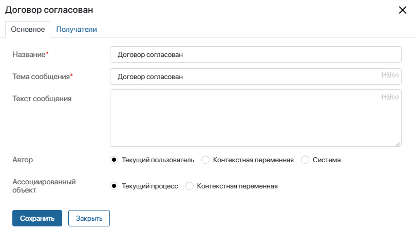
Для этого нажмите на кнопку Добавить и выберите контекстную переменную Инициатор.
Элемент «Закрыть Согласование»
Этот элемент используется как вспомогательный для элемента Согласование. Он размещается на том отрезке, где необходимо завершить согласование документа и вынести резолюцию, не дожидаясь окончания бизнес-процесса. Разместите его сразу после оповещения о том, что договор согласован. В настройках в качестве объекта согласования выберите Договор и установите переключатель в положение Согласовано.
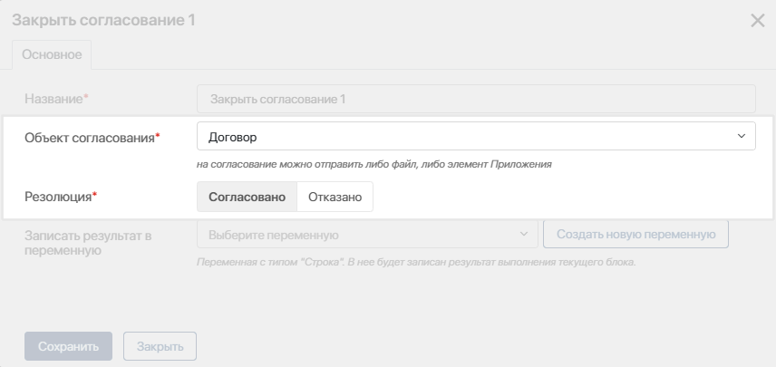
Теперь, когда процесс дойдет до этой точки, резолюция появится на карточке договора, и согласованный документ пойдет дальше по маршруту.
Задачи «Внести правки» и «Зарегистрировать договор»
Помимо непосредственно согласования, процесс может включать дополнительные задачи.
Если согласующие отклонили договор, нужно вернуть его инициатору на доработку. Для этого добавим задачу Внести правки в договор в зону ответственности инициатора. Инициатор внесет правки и сможет снова отправить документ на согласование — для этого предусмотрим переход от задачи Внести правки к задаче Согласование.
Согласованный договор уходит секретарю на регистрацию. Добавьте задачу на схему, укажите ее название и ограничьте задачу по времени. На форму задачи обязательно добавьте переменную Договор.
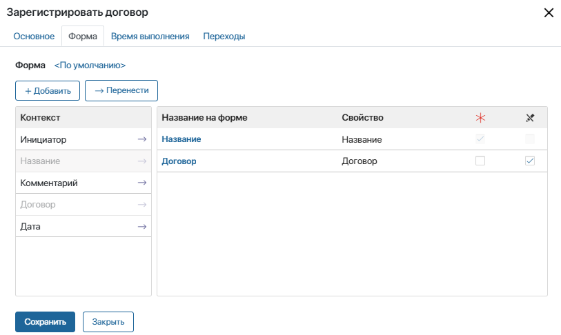
Это нужно для того, чтобы прямо из задачи секретарь смог перейти на карточку документа и зарегистрировать его.
Конечное событие
Теперь добавьте конечное событие в том месте, где процесс должен завершится:
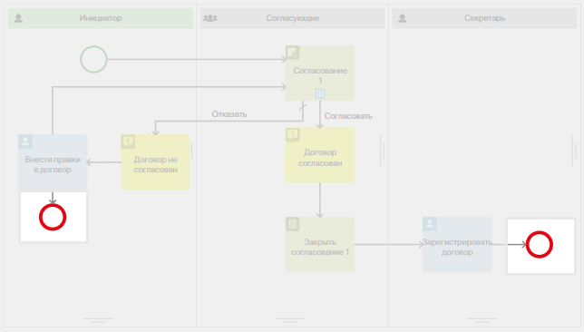
- после задачи Зарегистрировать договор, когда договор прошел все этапы маршрута;
- после задачи Внести правки на тот случай, если необходимые правки внести невозможно.
Готовый маршрут нужно сохранить, проверить и опубликовать — для этого предусмотрены кнопки в верхнем меню. После этого процесс станет доступен пользователям.
Привязать маршрут к типу документа
Когда маршрут настроен и опубликован, его нужно привязать к приложению Договоры — добавить кнопку для запуска процесса на карточку договора.
Перейдите в приложение Договоры и откройте карточку любого договора. В нижней части формы, рядом с кнопкой Редактировать, нажмите на значок шестеренки, а затем на значок +. В меню выберите пункт Добавить кнопку запуска процесса. Настройте кнопку:
- Введите название кнопки — Отправить на согласование и выберите ее цвет.
- Определите, кому из пользователей будет доступна кнопка — всем или только тем, у кого есть доступ на редактирование или удаление договора.
- В поле для выбора процесса выберите созданный на предыдущих шагах процесс Согласование.
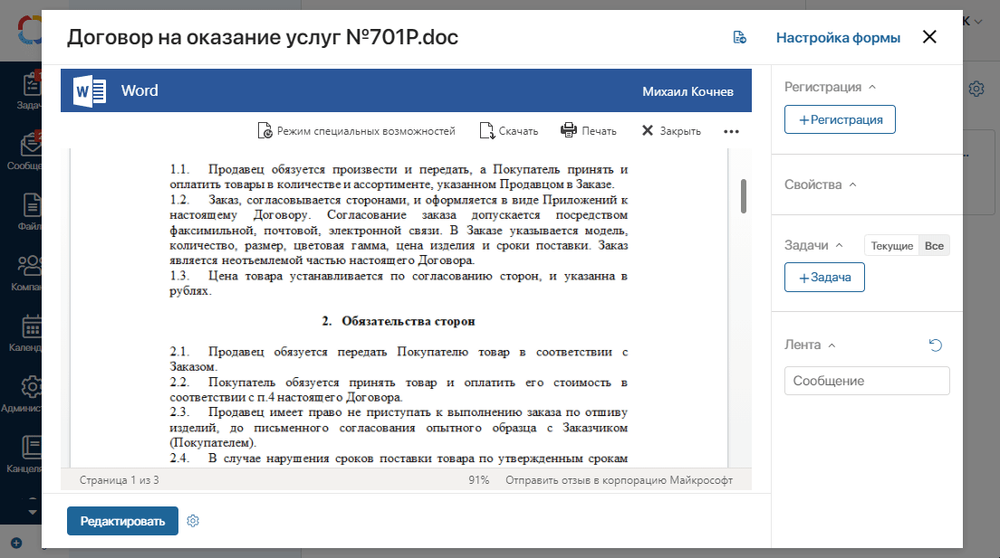
Теперь на карточке договора появится кнопка Отправить на согласование. Нажав на нее, сотрудник запустит процесс: система направит договор согласующим, поставит им соответствующие задачи, после чего договор уйдет на регистрацию. Для регистрации на боковой панели документа предусмотрены поля, в которых секретарь укажет место регистрации и дело, а также введет регистрационный номер договора.
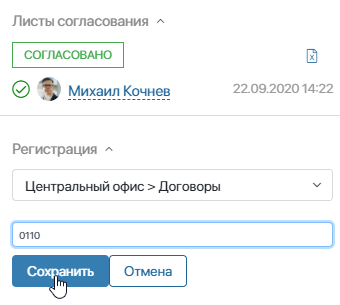
Обратите внимание, регистрация доступна только для приложений типа Документ. Для того, чтобы пользователи могли регистрировать документы в системе, настройте Номенклатуру дел и включите регистрацию. Подробно о том, как это сделать, вы можете прочитать в статье «Номенклатура и настройки регистрации».